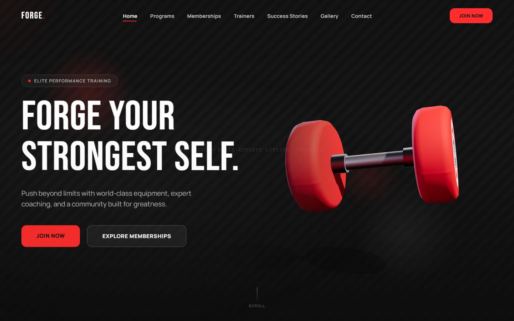
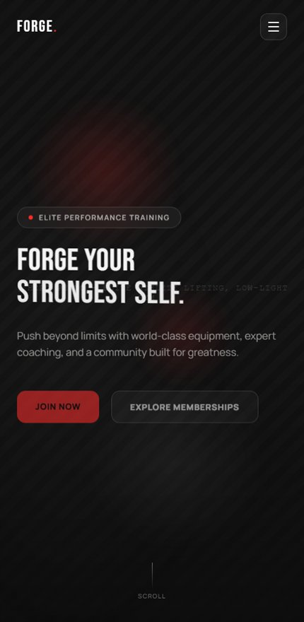

FORGE — Elite Performance Training
A concept landing page for a 24/7 training facility. A real-time 3D dumbbell anchors the hero, and the scroll carries you through programs, coaches, and memberships without ever dropping a frame.
View Live Site